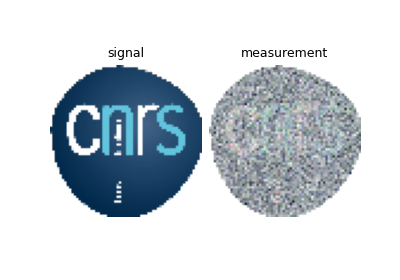
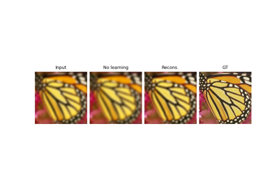
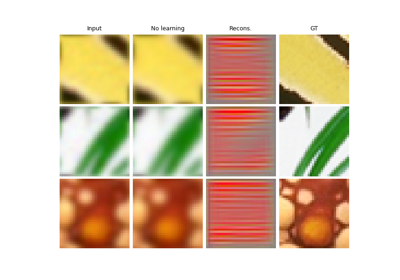

gaussian_blur
- deepinv.physics.blur.gaussian_blur(sigma=(1, 1), angle=0)[source]
Gaussian blur filter.
- Parameters:
Examples using gaussian_blur:

A tour of forward sensing operators
A tour of forward sensing operators

Image deblurring with custom deep explicit prior.
Image deblurring with custom deep explicit prior.

Deep Equilibrium (DEQ) algorithms for image deblurring
Deep Equilibrium (DEQ) algorithms for image deblurring